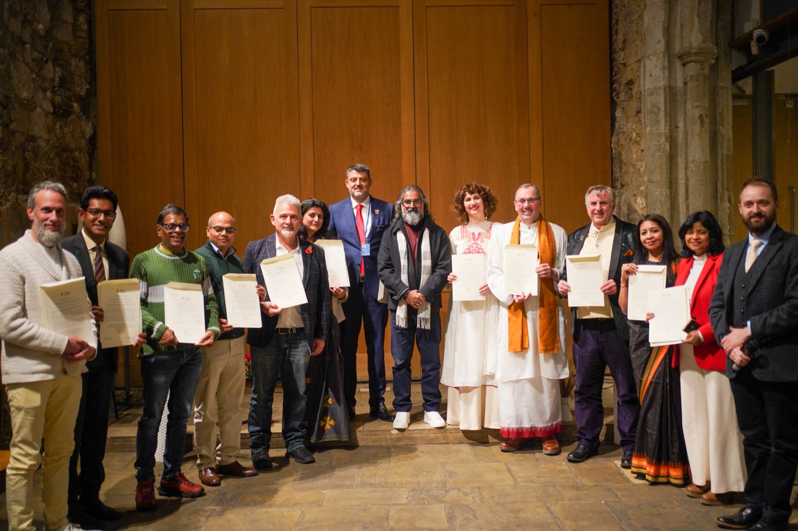
The House of All Faiths & Communities
A common inheritance,
a shared responsibility.
About
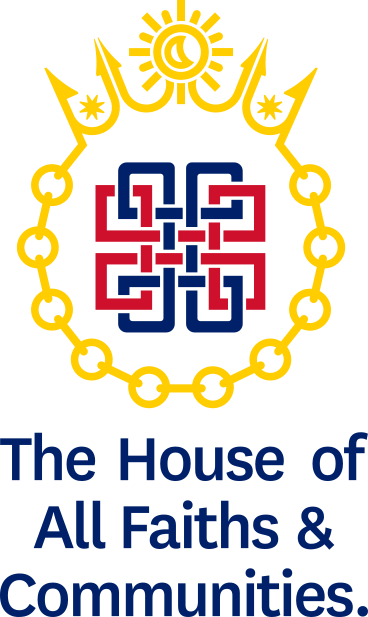
- Responsibility
- Accountability
- Respect
The House of All Faiths & Communities is a non-partisan body bringing together faith, community, civic and cultural leaders from across the United Kingdom. We unite around three principles: responsibility, accountability and respect (RAR), to stand against fear and discrimination, strengthen the bonds between communities, preserve the cultures and traditions we inherit, and hold ourselves publicly accountable for the commitments we make and the actions we take.
About HOFACThe House
What we are
We must speak when the public cannot. This is why HOFAC was formed.
HOFAC is a house of faith, community, cultural and civic leadership, working towards peace, harmony and responsible coexistence. It is aligned with no single religion, party or community, and asks no one to set aside what they believe.
Britain's cultural inheritance is not held by any one community. It is carried by all of them, and it is preserved when they take responsibility for it together. HOFAC exists to make that responsibility visible.
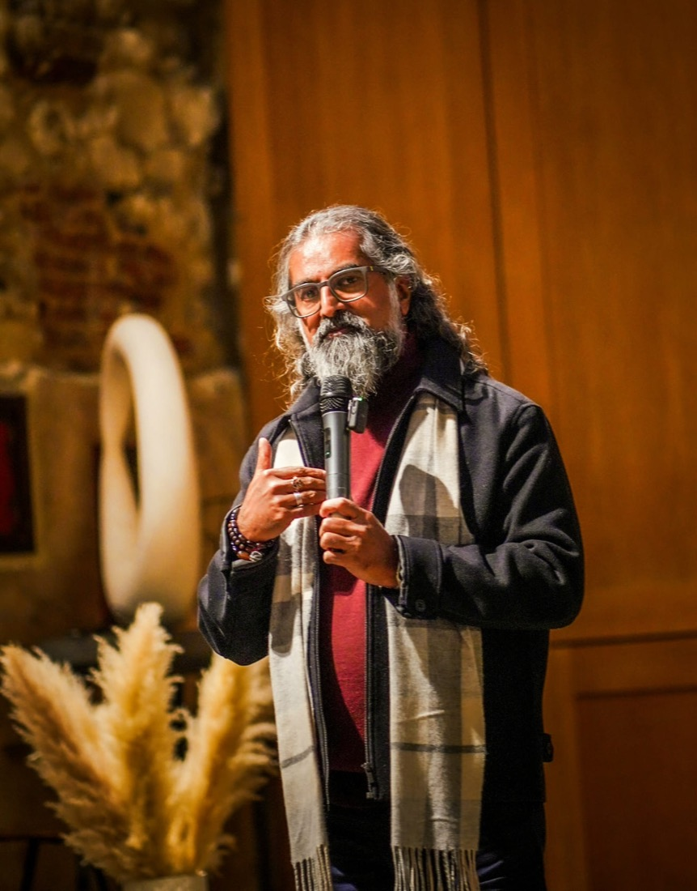
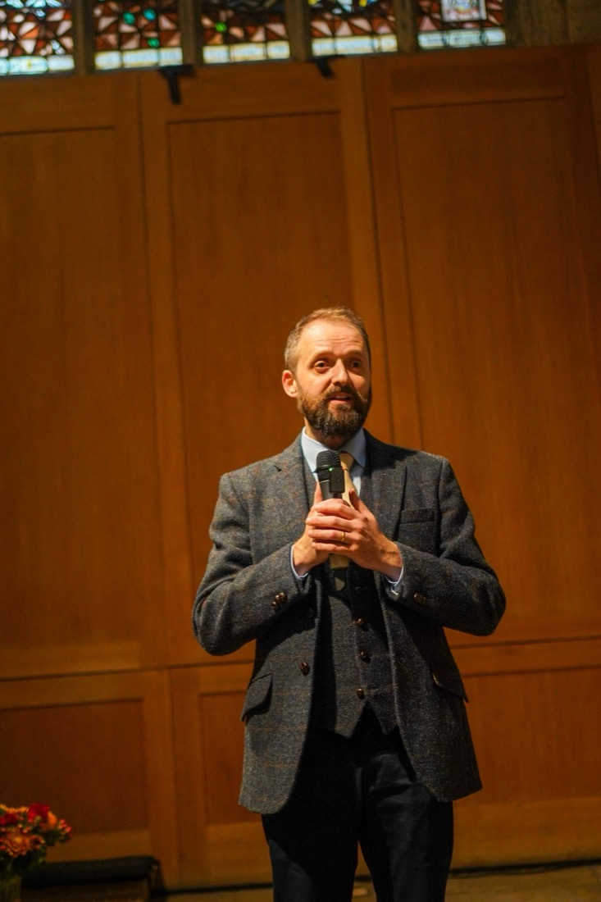
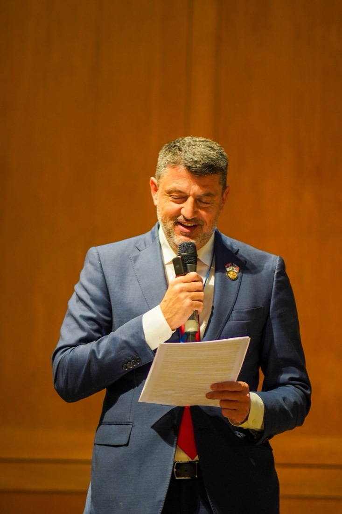
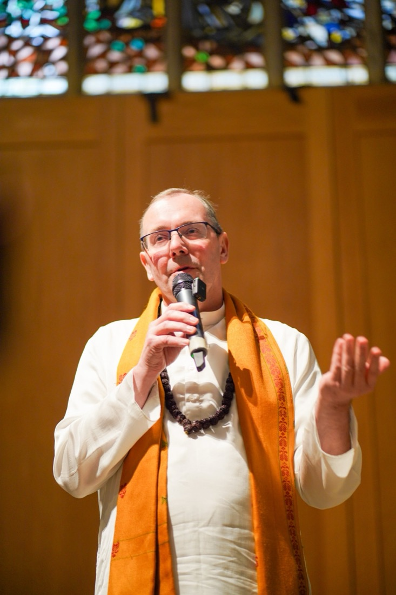
Annual commitments
Each member undertakes at least one piece of practical work a year and gives an account of what came of it. Both are published.
A balanced house
HOFAC is of most use when no single tradition or community predominates within it. Membership and invitations are managed with that balance in mind.
A place to contribute
HOFAC is not a platform for promoting a member's own organisation or interests. Members join for the work that is held in common.
Institutions, not individuals
An organisation holds its membership through its head or senior representative. When that person changes, the membership passes to their successor.
Dialogue is where this work begins, not where it ends.
Sunday 1 November 2026
The launch of the House
HOFAC was launched at St Ethelburga’s Centre for Reconciliation and Peace in London, at an afternoon titled Need of the Hour: The Leaders’ Responsibility. Faith communities from across the United Kingdom were joined by peace ambassadors, diplomats and guests from New York, Belgium and Serbia, with around 200 more taking part online.
Watch the launch on YouTube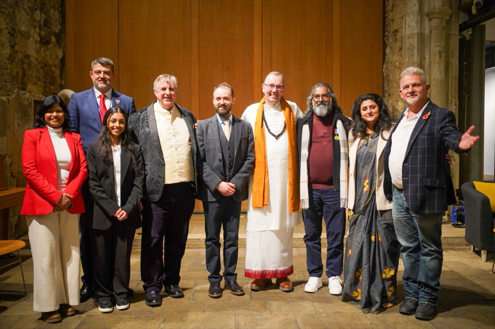
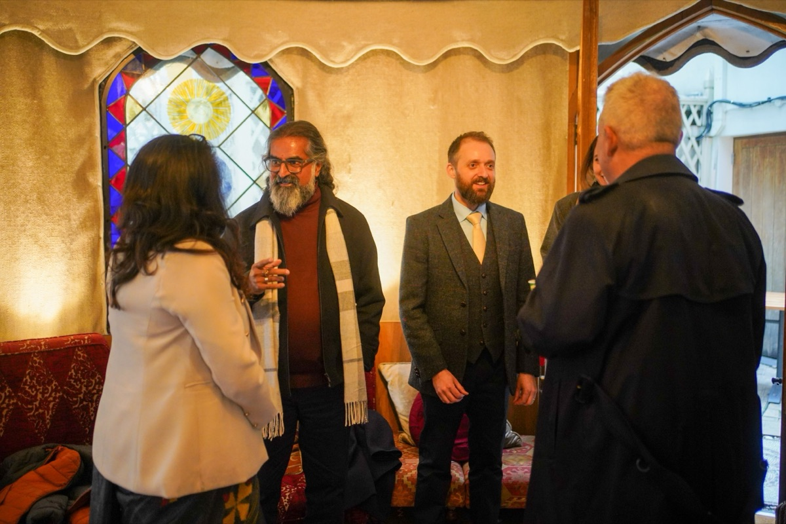
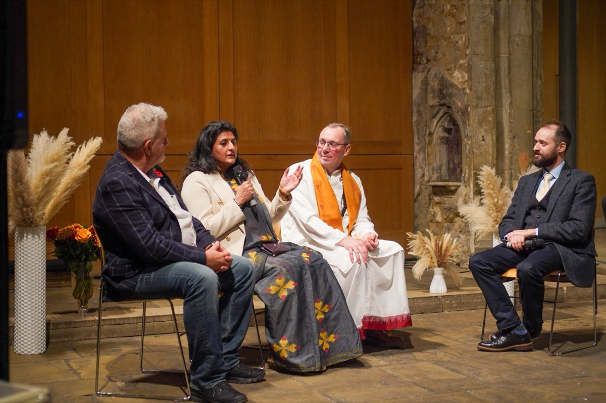
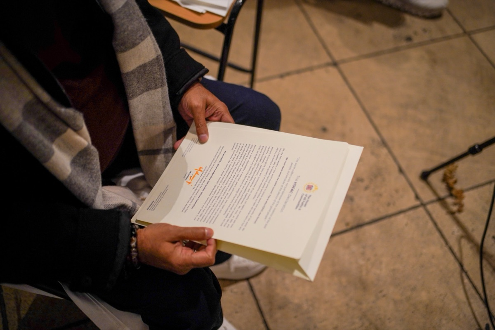
Our vision
A world in which people live without fear of discrimination or violence; where faiths, cultures and communities coexist with dignity; where the cultural inheritance of nations is protected; and where those who lead accept responsibility not only for their own communities, but for the wellbeing of society as a whole.
Diversity in unity. Humanity with responsibility.
HOFAC begins in the United Kingdom. The vision is not limited to it.
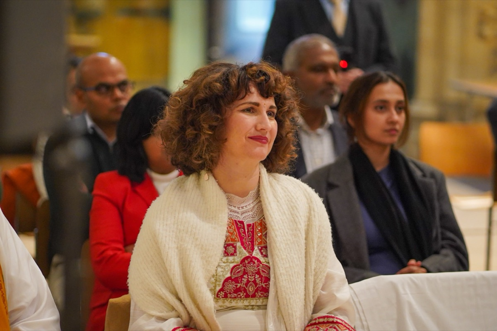
Signed by our founder and trustees
The HOFAC Declaration
We are HOFAC. We are responsible faith leaders without hierarchies.
Our founding statement sets out what HOFAC stands for and what those who lead communities owe to one another.
The principles that hold us
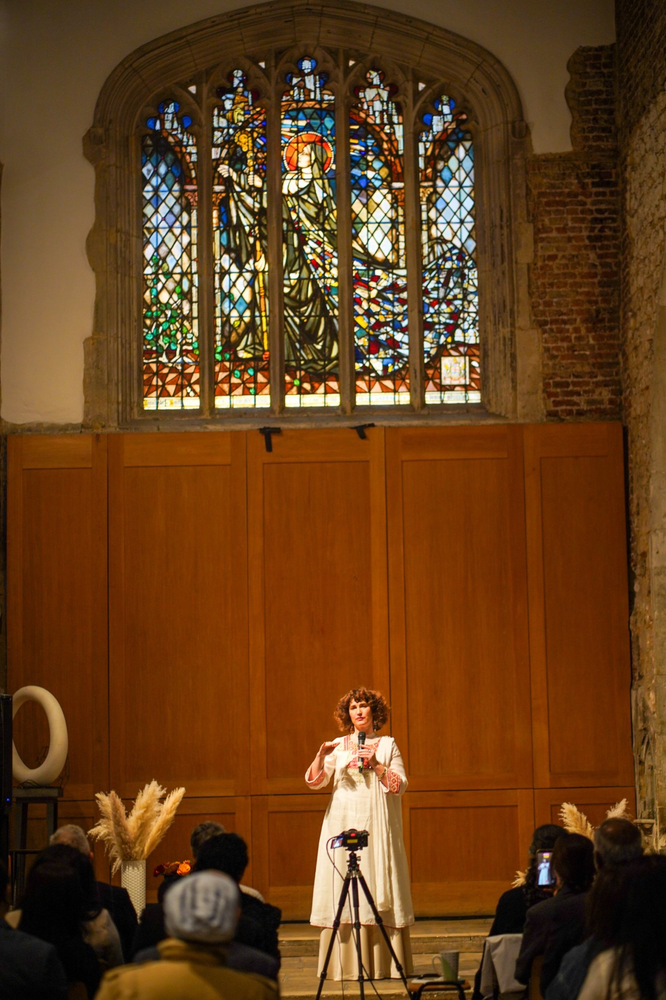
RESPONSIBILITY
Faith and community leadership carries a responsibility beyond one's own community. We accept a duty to strengthen civic society, to uphold peaceful coexistence and the rule of law, to contribute to the common good, and to preserve the cultural inheritance we hold together.
ACCOUNTABILITY
We hold ourselves to what we have said. Every organisation that joins HOFAC makes a commitment to action each year, and reports openly on what it delivered. We publish those commitments and their outcomes.
RESPECT
We respect people of every religion, belief, background and viewpoint. We accept that people of good faith will disagree, and we hold that lawful disagreement is part of a free society. We reject hatred, intimidation and the dehumanising of any community.
We do not ask for agreement in matters of belief. We ask for responsibility in matters of civic life.
Neutrality is our strength
HOFAC does not exist to advance one religion, political ideology, community or faction over another.
Neutrality here is not caution or evasion. It is the condition that allows communities who disagree with one another to sit in the same room, and it is held to deliberately.
We believe a country's culture can be cared for without defining ourselves against any community within it.
It is a test we apply to what we publish, to those we invite, and to the platforms we lend our name to.
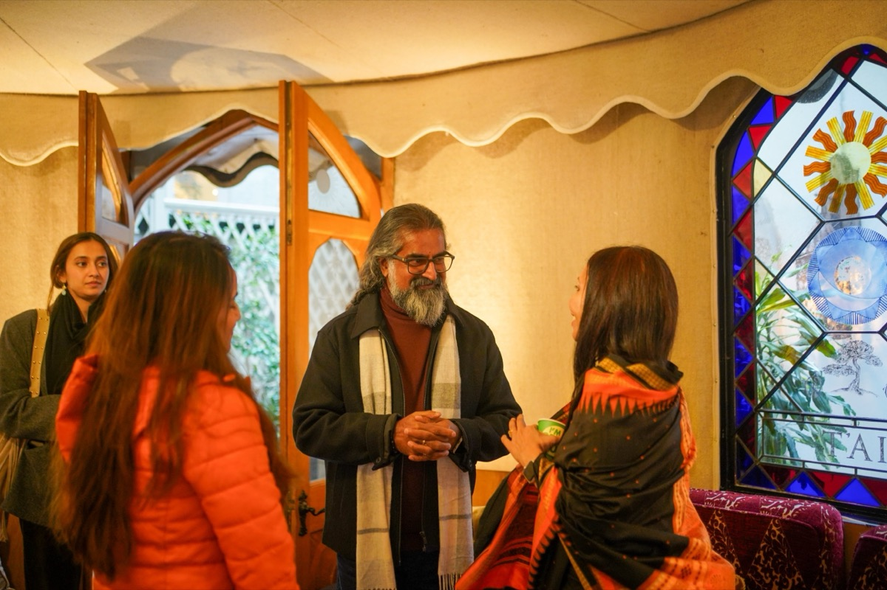
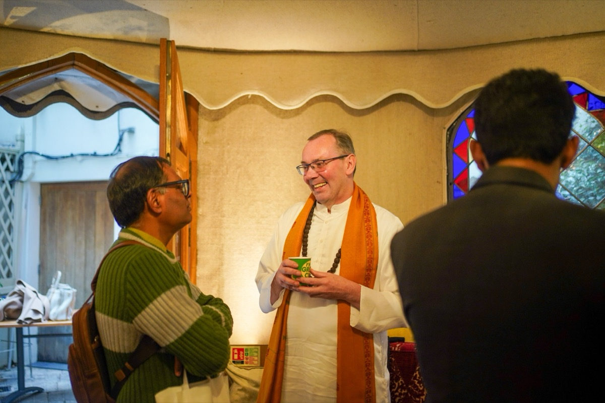
Preserving what we hold in common
The cultures, traditions, languages and histories of these islands are an inheritance in trust. So are the traditions that communities have brought with them and made part of British life.
HOFAC works to preserve both. We support the communities of the four nations of the United Kingdom in sustaining their own heritage, and we work to ensure that inheritance is understood, valued and passed on, together with the shared civic values that make harmonious community life possible: democracy, the rule of law, individual liberty, and mutual respect and tolerance of different faiths and beliefs.
Preservation is not nostalgia. A culture is kept alive by the people who practise it, teach it and carry it forward. Our work is to help communities do exactly that, and to do it in respect of one another.
Apply
How an organisation takes part
Endorse the Declaration
An organisation endorses the HOFAC Declaration and nominates a senior representative to speak for it.
02Make a commitment
It commits to at least one concrete action each year: community service, education, heritage, youth engagement, interfaith cooperation or addressing prejudice.
03Account for it
It gives a short annual account of what it delivered. We publish these together in an annual Action and Impact Report.
A working coalition, not a list of names.
Apply to joinContact
Speak to us
We are speaking with faith leaders, community organisations, parliamentarians and civic bodies. If your organisation would like to take part, or if you would like to know more, we would be glad to hear from you.